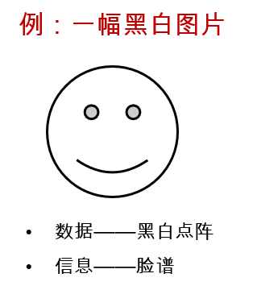

数据库系统
第一章 数据库系统介绍
数据库系统的应用
各行各业都在使用
数据库系统相关的基本概念
- 数据(Data):是事实或观察的结果，是对客观事物的逻辑归纳，是用于表示客观事物的未经加工的原始素材。
- 数据库(Database):是按照数据结构来组织，存储和管理数据的建立在计算机存储设备上的仓库
- 数据库管理系统(DBMS):是一种操纵和管理数据库的大型软件，用于建立，使用和维护数据库。
- 数据库系统(DBS):是一个为实际可运行的存储，维护和应用系统提供数据的软件系统，是存储介质，处理对象和管理系统的集合体。
信息与数据
数据
- 对现实世界中客观事物的符号表示
- 可以是数值数据，也可以是非数值数据，如声音，图像等
- 计算机中的数据：能输入计算机，并能为其处理的符号序列
信息
- 数据是信息的符号表示 ,或称为载体 .
- 信息是数据的内涵，是数据的语义解释
- 数据是符号化的信息
- 信息是语义化的信息

数据库管理系统(Database Management System,DBMS)
- 负责数据库的建立，操作，管理和维护的软件系统
基本特点
- DBMS能对数据库进行有效的管理。包括存储管理，安全性管理，完整性管理和数据恢复等。
功能
- 数据定义功能
- 提供数据定义语言(DDL)
- 定义数据库中的数据对象
- 数据组织，存储和管理
- 分类组织，存储和管理各种数据
- 确定组织数据的文件结构和存取方式
- 实现数据之间的联系
- 提供多种存取方法提高存取效率
- 数据操纵功能
- 提供数据操纵语言(DML)
- 实现对数据库的基本操作(CRUD)
- 数据库的事务管理和运行管理
- 数据库在建立，运行和维护时由DBMS统一管理和控制
- 保证数据的安全性，完整性，多用户对数据的并发使用
- 发生故障后的系统恢复
- 数据库的建立和维护功能(实用程序)
- 数据库初始数据装载转换
- 数据库存储
- 介质故障恢复
- 数据库的重组织
- 性能监视分析等
- 其他功能
- DBMS与网络中其它软件系统的通信
- 两个DBMS系统的数据转换
- 异构数据库之间的互访和互操作
数据库系统(Database System):数据库+数据库管理系统(开发工具)+应用程序+数据库管理员
数据库系统的分类
- 联机分析处理 Decision Support (DSS)/Online Analytical Processing,OLAP
- 通常并发请求数较低
- 系统会进行大量的数据分析，数据挖掘
- 常用于气象，金融，零售的行业，对管理层提供决策的数据支持
- 联机事物处理 Oline Transaction Processing(OLTP)
- 时效性要求非常高
- 系统会出现瞬时性的大量用户访问，并发请求数非常高
- 常用于在线交易系统
数据库系统的发展
数据管理技术概念
- 对数据进行分类，组织，编码，存储，检索和维护
- 数据处理的中心问题
数据管理技术的发展动力
- 应用需求的推动
- 计算机硬件的发展
- 计算机软件的发展
发展阶段
- 人工管理阶段
- 以纸质文档的形式保存数据信息
- 文件按照一定分类以文件柜+文件夹+编目的形式保存
- 存储信息数量有限，并且不宜长期保存
- 管理信息人力成本非常高
- 文件管理阶段
- 将i西南西按照一定的分类保存到计算机文件中
- 组织形式：目录+文件
- 计算机磁盘提供了大量的存储空间，用于保存大量的数据信息
- 磁盘保存文件，数量达到一定规模后不宜与保存和查找资料
- 磁盘损坏会造成数据部分丢失
- 数据库系统阶段
- 通常一台独立计算机运行数据库软件，提供数据库对外访问服务
- 对外访问通常由网络协议集中提供，以TCP/IP协议为主
- 数据集中存放，由数据库服务器提供唯一访问方式
- 数据共享性高，冗余少
- 数据结构化，数据独立性高
- 有统一的数据控制功能
- 数据库集群系统阶段
- 由一组计算机运行相同的数据库软件，同时运行相同的数据库服务(数据库实例)
- 集群数据库根据用途不同分为高可用性集群(HA)和高性能集群(HP)
- 集群数据库提供异常强大的横向扩展性，有针对性的提供具备高可靠性的数据库服务或高性能的数据库服务。
- 数据库云计算系统阶段
- 由一组计算机系统构成一个私有数据中心(私有云)
- 多个私有云通过网络组合成大规模的分布式计算中心
- 云计算数据中心是真正意义上的分布式数据中心，构成庞大的数据处理能力和海量的数据存储空间。
数据库系统的发展
- 第一代数据库系统：70年代研制的层次和网状数据库系统
- 第二代数据库系统：关系数据库系统
- 第三代数据库系统：80年代以来数据库系统的两个主要特征是面向对象的数据模型以及数据库技术与其他学科的技术内容相结合
数据模型(核心和基础)
- 数据模型是对现实世界数据特征的抽象
- 数据模型=现实世界的模拟
- 数据模型应满足要求
- 能比较真实地模拟现实世界
- 容易被人理解
- 便于在计算机上实现
数据模型的层次划分
- 概念模型：也称为信息模型，它是按照用户的观点来对数据和信息建模，用于数据库设计。
- 逻辑模型：主要包括网状模型，层次模型，关系模型，面向对象数据模型，对象关系数据模型，半结构化数据模型等。按计算机系统的观点对数据建模，用于DBMS实现。
- 物理模型：对数据最底层的抽象，描述数据在系统内部的表示方式和存取方法，在磁盘或磁带上的存储方式和存取方法。
数据抽象方法——客观对象的抽象过程
两步抽象
- 现实世界中的客观对象抽象为概念模型。
- 概念模型转换为某一数据库管理系统支持的数据模型
概念数据模型
- E-R模型(Entity-Relationship Model)
- 实体(Entity)：客观存在并可互相区分的事物叫实体。
- 属性(Attribute): 实体所具有的某一特性。一个实体可以由若干属性来描述
- 域(Domain):属性的取值范围
- 实体型(Entity Type):实体名与其属性名集合共同构成实体型
- 如：学生(学号，姓名，年龄，性别，班级)是一个实体型
- 键/码(Key)
数据库用户和管理员
数据库体系结构
本博客所有文章除特别声明外，均采用 CC BY-NC-SA 4.0 许可协议。转载请注明来自 马嘉路！
 wechat
wechat alipay
alipay